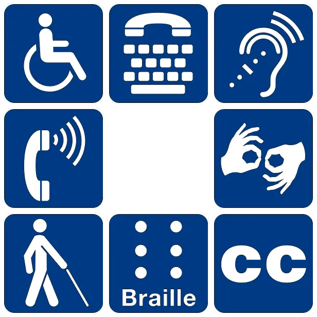

This was originally published on Medium as part of a longer post, which I have now split in two.
Thirty percent of people under the age of 65 have a chronic health condition. Despite this prevalence, people with chronic illnesses or disabilities often face discrimination. Over a third of disabled people have experienced negative bias in their current job. The unemployment rate is twice as high for people with disabilities, compared to the general population, even though companies which are inclusive of people with disabilities are more financially successful. People with disabilities earn significantly less than non-disabled people with the same education level. While there is a dearth of data specific to the tech industry (major tech companies gave evasive, off-the-record answers when asked by a disabled reporter why they don’t include disability in their diversity reports), there are plenty of first-hand accounts of exclusion and bias.
Because I occasionally tweet about my health struggles, (which include two brain surgeries, a life-threatening brain infection, and two ICU stays), a number of people in the tech industry have contacted me to privately share about their own experiences with disability or illness. Many of them say that they fear discrimination within the tech industry if they were to speak publicly about their health. Will people think that I’m less capable? Will my manager be less likely to give me important and high impact assignments? Will this change the lens through which people view my achievements or productivity? Sadly, these fears can be well-founded.

The people who build technology need to be representative of the people who use that technology, which increasingly includes everyone. Some of the users of your product have chronic illnesses and disabilities (whether you realize it or not) and they need to be involved in the creation of your product. In this 2-part set of posts, I want to address some misconceptions about disability, and to offer advice on how to improve, both in our interpersonal interactions and in our work cultures.
The disability pay gap, unemployment, and job loss
Haben Girma, the first deafblind person to earn a law degree at Harvard, wrote of her experience of discrimination, even as a high achiever who excelled at school and work, “Hard work alone will not overcome the widespread discrimination against people with disabilities. Employers need to break down disability barriers. People with disabilities succeed when communities choose to be inclusive. The biggest barriers exist not in the person, but in the social, physical, and digital environments_._” (emphasis mine)
Data from the UK shows that “the disability pay gap — the difference between what non-disabled and disabled workers earn — is 13.6%. On top of that, disabled people are significantly more likely to be unemployed, lose a job and be in low-waged work than non-disabled people. We’re also routinely given fewer responsibilities at work and turned down for promotion, or refused the job in the first place.” In the USA, there is a disability pay gap at all educational levels, which grows greater for higher levels of education.
Many tech companies have explicit reputations as being unwelcoming to those with health issues. At Amazon’s headquarters, multiple employees were given low performance reviews or put on performance improvement plans (a precursor to being fired) after having cancer or major surgeries, as reported in a 2015 New York Times article. “A woman who had thyroid cancer was given a low performance rating after she returned from treatment. She says her manager explained that while she was out, her peers were accomplishing a great deal… A woman who had breast cancer was told that she was put on a ‘performance improvement plan’, because ‘difficulties’ in her ‘personal life’ had interfered with fulfilling her work goals… A former HR executive said she was required to put_ a woman who had recently returned after undergoing serious surgery, and another who had just had a stillborn child, on performance improvement plans_.” (emphasis mine) While being fired immediately after cancer treatment or surgery is particularly egregious, bias often shows up in more subtle, yet still harmful, forms, such as: not accommodating medical or scheduling needs; inaccessible buildings or processes; inadequate HR resources; resentment towards a coworker that has taken medical leave; or even distrust/disbelief that someone’s experiences could be so different than your own.
The tech industry’s obsession with working ridiculously long hours is inaccessible to many disabled and ill people, for whom adequate rest is often not optional, or who may have regular doctor’s appointments, physical therapy, or tests. On top of being exclusionary, this insistence on long hours is contrary to research on productivity — it doesn’t even lead to more productive companies! (More on this point in part 3).
This was part 1 of a 3-part series. Check out part 2 here and part 3 here, which covers one aspect of the tech industry that excludes many people with disabilities (and is contrary to productivity research): the glorification of long hours.
A huge thank you to Julia Ferraioli, Jeremy Howard, and Negar Rostamzadeh for giving me valuable feedback on earlier drafts of this post.